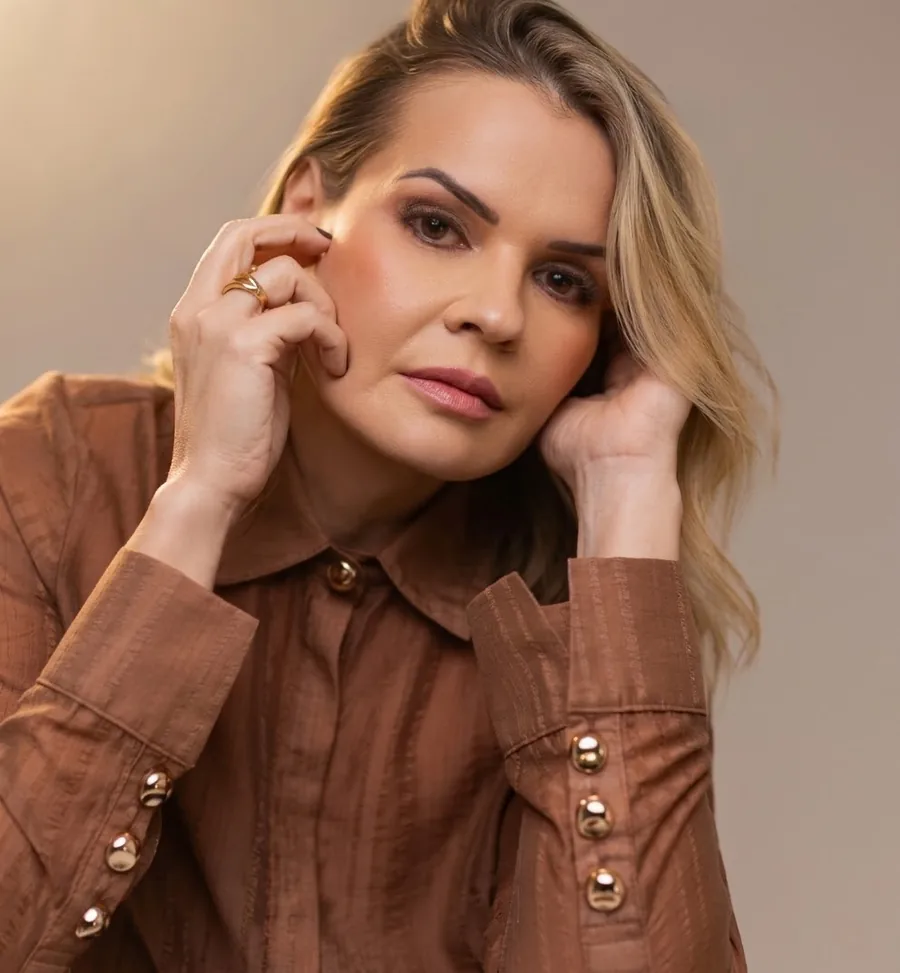
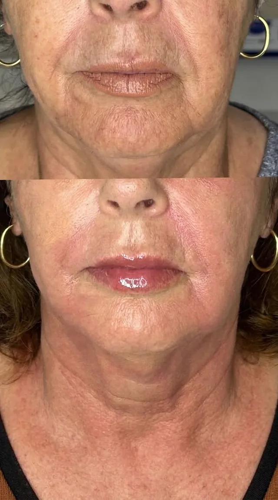

Estética Avançada
Cuidados faciais e corporais conduzidos com técnica e atenção às necessidades de cada cliente.
Falar sobre este tratamentoEstética avançada, facial e corporal
Cada pele, cada traço e cada objetivo pedem um olhar próprio. Aqui o atendimento começa por uma avaliação individual, com naturalidade e atenção em todas as etapas.

Josy Quinaia atua com estética avançada facial e corporal, com foco em um atendimento cuidadoso e individualizado.
[A DEFINIR COM A JOSY: formação, certificações, tempo de experiência e trajetória profissional.]
[A DEFINIR COM A JOSY: frase pessoal sobre seu propósito e forma de atender.]
Quatro frentes de cuidado. Os protocolos são sempre definidos após avaliação individual.
Cuidados faciais e corporais conduzidos com técnica e atenção às necessidades de cada cliente.
Falar sobre este tratamento
Avaliação das proporções do rosto, com abordagem natural e respeito à identidade de cada pessoa.
Falar sobre este tratamento
Cuidados voltados à qualidade e à aparência da pele ao longo do tempo, com planejamento personalizado.
Falar sobre este tratamento
Acompanhamento da saúde e das necessidades da sua pele, com orientação para o dia a dia.
Falar sobre este tratamentoOs resultados variam de pessoa para pessoa. Nenhum resultado é garantido.
Entender o que você sente, o que deseja e o que faz sentido para a sua rotina.
Observar pele, rosto e corpo com calma, sem protocolos prontos aplicados a todos.
Cuidar para que você continue se reconhecendo no espelho.
Em breve, fotografias reais de atendimentos, publicadas com autorização das clientes.
Envie uma mensagem e agende a sua avaliação.